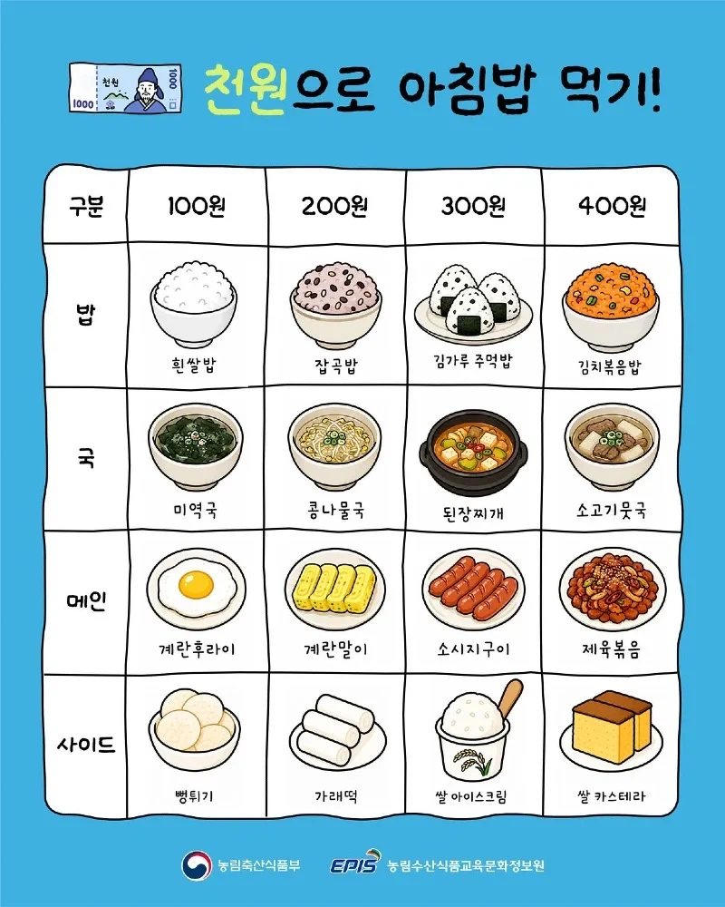

2341
뭐야 이거? 너무 좋잖아
사이드 거르고 1 3 4 하고 계란말이 추가
1110 에 간장뿌려먹을래 개맛도리겠노 ㅋㅋㅋㅋ
간계밥에 미역국 아침? ㅈㄴ 진수성찬임 ㅋㅋㅋㅋㅋㅋ
4444
국이랑 사이드 필요없고 쌀밥 잡곡밥에 제육 소시지 줘
이거 만든사람이 얼마로 뭐하기가 뭔지 잘모르는듯
ㄹㅇㅋㅋ
ㄹㅇ ㅋㅋㅋㅋㅋㅋㅋㅋㅋㅋㅋㅋㅋㅋㅋㅋ 보고 와씨 개 혜잔데 싶었음
A: 흰 쌀밥 - 콩나물국 - 제육볶음 - 쌀 아이스크림
B: 흰 쌀밥 - 소고기뭇국 - 계란말이 - 쌀 아이스크림
1.2.4.3
돈이 남는데
1,-,234,-
사이드는 아침부터 혈당 스파이크 올것들만 고르라하네
국 사이드 버리고 김볶에 제육 계란말이 먹을게
1342